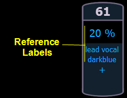
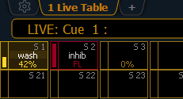

This device setting button gives you access to the following settings. See Live and Blind Configuration Menu and Playback Status Display Configuration for additional display settings.
When enabled, referenced record targets (such as presets or palettes) with labels will have their labels displayed rather than their target type and number. This is disabled by default.

{Show Reference Labels} is a global setting that will affect all displays. For some displays such as live and blind, {Show Reference Labels} can be enabled at the individual tab level by accessing the tab's configuration menu. This will override the setting in Setup.
When disabled, this setting prevents changes to be made to the cells in the Live/Blind and Playback Status Displays. {In-Cell Editing} is enabled by default.
Note: Options in the CIA are not affected by this setting.
When enabled, double clicking a direct select button will act as [Recall From] [Record Target] to place the entire contents of that preset, palette, or step-based effect on stage. The default for this setting is “Disabled”.
When enabled, the fader ribbon will display. The fader ribbon shows the state of Element's faders. When disabled, the fader ribbon will not display. {Display Fader Ribbon} is enabled by default.

When enabled, Element displays help prompt above the command line. When disabled, the prompts will not display. {Display Help Prompts} is enabled by default.